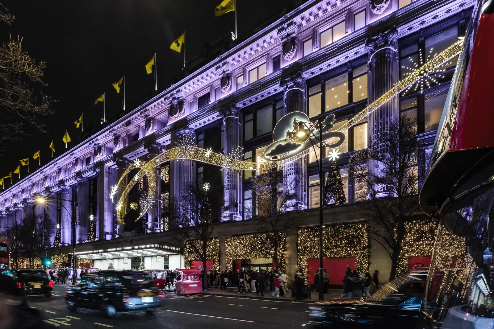
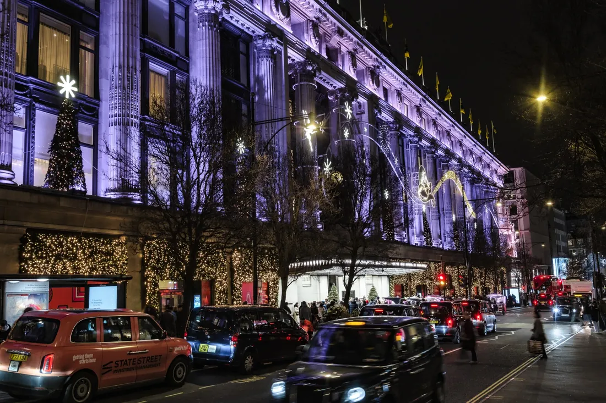

5minutes on foot
Hyde Park
350 acres of green, the Serpentine and Speakers' Corner.
The neighbourhood
Hyde Park across the road, Mayfair to the south, Marylebone to the east and Paddington a short walk west. Few addresses in London put so much within a walk.
The Arch
The landmark our name comes from has stood at the corner of Hyde Park for more than 170 years.
John Nash designs a triumphal arch in Carrara marble as the state entrance to Buckingham Palace.
The arch is moved to the north east corner of Hyde Park, as a new entrance to the park.
Its gates, by Samuel Parker, carry the lion of England, the cipher of George IV and St George and the Dragon.
By tradition only senior members of the Royal Family and the King's Troop, Royal Horse Artillery, pass through the central arch.
The map
Walking times from the apartments. The circle shows the area, not the door: the full address arrives with your booking.
Drag the map to look around.
On film
Short films of the places our guests walk to first.
350 acres of green, the Serpentine and Speakers' Corner.
John Nash's white marble arch, where Oxford Street begins.
The great department store and its food hall on Oxford Street.
Fountains and urns at the head of the Long Water.
Its curve of shops, and the angels at Christmas.
The second of London's great arches, at Hyde Park Corner.
The palace Marble Arch was first built to open onto.
Big Ben and the Houses of Parliament on the river.
Close by
Village cafés, late night grills, the canal and the park, all within a short walk.
Boutiques, delis and cafés around Connaught Street, the quiet village behind Marble Arch.
London's Middle Eastern high street: Lebanese grills, juice bars and cafés open late.
Hyde Park's corner for free speech since 1872, liveliest on Sunday mornings.
Pedal boats in summer, the Lido for a swim and the Serpentine Galleries across the bridge.
Canal side walks, floating cafés and the Rolling Bridge that curls up on itself.
Independent shops, Daunt Books and cafés, a fifteen minute walk east.
London's great shopping street begins at Marble Arch, with Selfridges a short walk along.
Garden squares, Mount Street and the grand hotels, just south of Oxford Street.


Selfridges and Oxford Street at Christmas, a short walk from the apartments.
Getting around
The Elizabeth line from Paddington reaches Heathrow, Bond Street and the City. The Heathrow Express takes fifteen minutes to the airport.